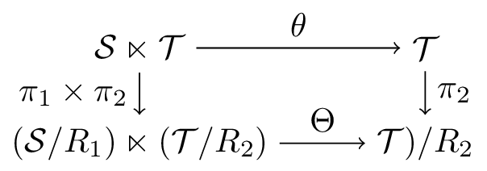

4. Constructions with inverse semigroupoids
Throughout this section the letters $\mathcal{S}$, $\mathcal{T}$,… will always denote inverse semigroupoids. We define $\cat{TopIS}$ as the category of topological inverse semigroupoids and their continuous homomorphisms, and $\cat{TopGr}$ as the full subcategory of $\cat{TopIS}$ of topological groupoids. By $\cat{EtIS}$ and $\cat{EtGr}$ we denote the full subcategories of $\cat{TopIS}$ of étale inverse semigroupoids and groupoids, respectively.4.1. Underlying groupoids
The underlying or restricted product groupoid of a semigroupoid $\mathcal{S}$ is the groupoid $\mathscr{U}(\mathcal{S})$ obtained from $\mathcal{S}$ by restricting its product to the set $\mathscr{U}(\mathcal{S})^{(2)}=\left\{(a,b)\in \mathcal{S}\times \mathcal{S}:a^*a=bb^*\right\}$.
It is straightforward to check that $\mathscr{U}(\mathcal{S})$ is indeed a groupoid. The unit space (identified with the object space) of $\mathscr{U}(\mathcal{S})$ is $E(\mathcal{S})$, and the inverse of $a\in\mathscr{U}(\mathcal{S})$ is $a^{-1}=a^*$. The source and range maps on $\mathscr{U}(\mathcal{S})$ are given, respectively, by
If $\mathcal{S}$ is a topological semigroupoid, then the same topology of $\mathcal{S}$ makes $\mathscr{U}(\mathcal{S})$ a topological groupoid: The product and inverse maps are immediately continuous.
If $\mathcal{S}$ is étale, then $\mathscr{U}(\mathcal{S})$ is étale as well. Indeed, suppose that $A$ is a bisection of the semigroupoid $\mathcal{S}$. If $a,b\in A$ and $a^*a=b^*b$, then $\so(a)=\ra(a^*a)=\ra(b^*b)=\so(b)$, thus $a=b$. Then the source map $\so_{\mathscr{U}(\mathcal{S})}\colon a\mapsto a^*a$ is injective on $A$. Moreover, $\so_{\mathscr{U}(\mathcal{S})}(A)=A^*A$ is open for every $A\in\mathbf{B}(\mathcal{S})$. Thus $\so_{\mathscr{U}(\mathcal{S})}$ is a continuous, open, locally injective map, i.e., a local homeomorphism. Therefore $\mathscr{U}(\mathcal{S})$ is an étale groupoid.
Note that if $\mathcal{G}$ is a groupoid and $\phi\colon\mathcal{G}\to\mathcal{S}$ is a homomorphism, then for all $(g,h)\in\mathcal{G}^{(2)}$ we have
In particular, if $\phi\colon\mathcal{S}\to \mathcal{T}$ is a continuous semigroupoid homomorphism, then the same map induces a continuous groupoid homomorphism $\mathscr{U}(\phi)=\phi\colon\mathscr{U}(\mathcal{S})\to\mathscr{U}(\mathcal{T})$. This gives us a functor $\mathscr{U}\colon\cat{TopIS}\to\cat{TopGr}$. In fact, $\mathscr{U}$ is a retraction from $\cat{TopIS}$ to $\cat{TopGr}$, i.e., the restriction of $\mathscr{U}$ to $\cat{TopGr}$ is the identity functor.
The functor $\mathscr{U}$ can be easily seen to be terminal universal with respect to the inclusion of categories $\iota\colon\cat{TopGr}\hookrightarrow\cat{TopIS}$. The same facts are also true when restricted to $\cat{EtIS}$ and $\cat{EtGr}$.
Let $\mathcal{S}$ be a topological (resp. étale) inverse semigroupoid. Then for every topological (resp. étale) groupoid $\mathcal{G}$ and for every continuous semigroupoid homomorphism $\phi\colon\mathcal{G}\to\mathcal{S}$, the associated map $\phi\colon\mathcal{G}\to\mathscr{U}(\mathcal{S})$ is a groupoid morphism. In other words, there exists a unique groupoid morphism $\psi\colon\mathcal{G}\to\mathscr{U}(S)$ (namely, the same function as $\phi$) such that the following diagram commutes:
4.2. Quotients
A somewhat general notion of quotient for discrete semigroupoids is considered in [MR3597709]. We will consider only quotients of inverse semigroupoids which preserve their vertex sets.
If $G$ is a graph, an equivalence relation $R$ on $G^{(1)}$ is said to be graphed the source and range maps are $R$-invariant (i.e., constant on all $R$-equivalence classes).
A graph congruence on an inverse semigroupoid $\mathcal{S}$ is a graphed equivalence relation $R$ on $\mathcal{S}$ such that for all $a,\widetilde{a},b,\widetilde{b}\in \mathcal{S}$, if $(a,\widetilde{a}),(b,\widetilde{b})\in R$ and $(a,b)\in\mathcal{S}^{(2)}$, then $(ab,\widetilde{a}\widetilde{b})\in R$.
Note that, in the definition above, the product $\widetilde{a}\widetilde{b}$ is defined since $\so(\widetilde{a})=\so(a)=\ra(b)=\ra(\widetilde{b})$, as the source and range maps are constant on $R$-equivalence classes.
Given a graph congruence $R$ on an inverse semigroupoid $\mathcal{S}$, we let $\mathcal{S}/R$ be the quotient semigroupoid, which is a graphed semigroupoid constructed in the same manner as quotients of categories (see [MR1712872]): The vertex space is $(\mathcal{S}/R)^{(0)}\defeq\mathcal{S}^{(0)}$. The arrow space is the usual quotient set $\mathcal{S}/R$, and we denote the $R$-equivalence class of $a\in\mathcal{S}$ as $[a]$. Since $\so$ and $\ra$ are constant on $R$-equivalence classes, then they factor (uniquely) to maps $\so,\ra\colon\mathcal{S}/R\to\mathcal{S}^{(0)}$, $\so([a])=\so(a)$ and $\ra([a])=\ra(a)$ for all $a\in\mathcal{S}$. The product is defined in the only manner which makes the natural quotient map $\mathcal{S}\to\mathcal{S}/R$ a semigroupoid homomorphism. Namely, given $(x,y)\in (\mathcal{S}/R)^{(2)}$, choose representatives $a\in x$ and $b\in y$. Then $\so(a)=\so(x)=\ra(y)=\ra(b)$, so we may define $xy=[ab]$. Since $R$ is a congruence, this product does not depend on the choice of representatives of $x$ and $y$. Associativity of the product is immediate.
Let us prove that quotients of inverse semigroupoids are also inverse semigroupodis. The following is an analogue of a well-known fact for semigroups, and its proof follows the same steps. See [MR1455373], for example.
A regular graphed semigroupoid $\mathcal{S}$ is an inverse semigroupoid if and only if elements of $E(\mathcal{S})$ commute, i.e., for all $(e,f)\in (E(\mathcal{S})\times E(\mathcal{S}))\cap \mathcal{S}^{(2)}$, $ef=fe$.
The following is a particular case of [MR3597709] and the Lemma above. It may also be proven directly as in the case of inverse semigroups ‒ see [MR1724106].
If $R$ is a graph congruence on an inverse semigroupoid $\mathcal{S}$, then $\mathcal{S}/R$ is an inverse semigroupoid.
The étale case
Suppose now that $\mathcal{S}$ is a topological (or étale) inverse semigroupoid, and that $R$ is a graphed congruence on $\mathcal{S}$. We wish to endow $\mathcal{S}/R$ with a natural topology making it a topological (or étale) inverse semigroupoid as well, and for this we use the quotient topology. However, in general we do not have control over the topology of $(\mathcal{S}/R)^{(2)}$, and thus we cannot guarantee that the multiplication map of $\mathcal{S}/R$ is continuous with respect to the quotient topology. We will therefore to make further topological assumptions on the congruence $R$ in order to obtain the desired result. Let us briefly recall some facts about quotient topologies.
-
If $X$ is a topological space, $Y$ is a set, and $\pi\colon X\to Y$ is a function, the quotient topology of $Y$ (induced by $\pi$) has as open subsets the subsets $A$ of $Y$ such that $\pi^{-1}(A)$ is open in $X$. In this case, a function $p\colon Y\to Z$, where $Z$ is a topological space, is continuous if and only if $p\circ\pi$ is continuous. In other words, continuous maps from $Y$ are precisely the factors of continuous maps from $X$ through $\pi$.
-
If $f\colon X\to Y$ is a continuous, open, surjective function between topological spaces, then the topology of $Y$ concides the quotient topology of $f$.
Suppose that $R$ is an equivalence relation on a topological space $X$. Given a subset $A\subseteq\mathcal{S}$, we let $R[A]$ denote the saturation of $A$, i.e., $R[A]\defeq\left\{x\in X:xRa\text{ for some }a\in A\right\}$. We say that $R$ is open if the saturation of every open subset of $X$ is open, or equivalently if the quotient map $X\to X/R$ is an open map.
Let $\mathcal{S}$ be a topological (resp. étale) inverse semigroupoid and $R$ a graphed open congruence on $\mathcal{S}$. Then the quotient topology of $\mathcal{S}/R$ makes it a topological (resp. étale) inverse semigroupoid, where we endow $\mathcal{T}^{(0)}=\mathcal{S}^{(0)}$ with its original topology.
We first assume only that $\mathcal{S}$ is a topological inverse semigroupoid. Let us denote $\mathcal{T}\defeq\mathcal{S}/R$ and $\pi\colon\mathcal{S}\to\mathcal{T}$ the quotient map.
We have the commutative diagram
We will prove that $\mathcal{T}^{(2)}$ has the quotient topology induced by the restriction of $\pi\times\pi$ to $\mathcal{T}^{(2)}$. After that, continuity or the product on $\mathcal{T}$ follows easily, since we have the commutative diagram
Since $\pi$ is surjective, continuous and open, because $R$ is open, then $\pi\times\pi$ is also surjective, continuous and open, and therefore $\mathcal{T}\times\mathcal{T}$ has the quotient topology induced by $\pi\times\pi$.
Moreover, we have $\mathcal{S}^{(2)}=(\pi\times\pi)^{-1}\left(\mathcal{T}^{(2)}\right)$ and so for every $A\subseteq \mathcal{S}\times\mathcal{S}$ we have $(\pi\times\pi)(A\cap\mathcal{S}^{(2)})=(\pi\times\pi)(A)\cap\mathcal{T}^{(2)}$. In particular the restriction $(\pi\times\pi)|_{\mathcal{S}^{(2)}}\colon\mathcal{S}^{(2)}\to\mathcal{T}^{(2)}$ is also continuous, surjective, and open, and therefore $\mathcal{T}^{(2)}$ has its quotient topology, and continuity of the product map follows.
Now assume that $\mathcal{S}$ is étale. If $A$ is an open bisection of $\mathcal{S}$, then $\pi(A)$ is an open bisection of $\mathcal{T}$, because $\so_{\mathcal{T}}\circ\pi=\so_{\mathcal{S}}$ and $\ra_{\mathcal{T}}\circ\pi=\ra_{\mathcal{S}}$ are injective on $A$. Moreover, the source map of $\mathcal{T}$ is open: if $C\subseteq\mathcal{T}$ is open, then $\so_{\mathcal{T}}(C)=\so_{\mathcal{S}}(\pi^{-1}(C))$ is open in $\mathcal{T}^{(0)}=\mathcal{S}^{(0)}$. Therefore $\so_{\mathcal{T}}$ is continuous, open, and locally injective, hence a local homeomorphism.
Therefore, under the hypotheses of Proposition 4.6, $\pi\colon\mathcal{S}\to\mathcal{S}/R$ is a continuous homomorphism of topological inverse semigroupoid satisfying the usual universal property: If $\phi\colon\mathcal{S}\to\Lambda$ is any continuous (resp. open) homomorphism from $\mathcal{S}$ to a topological semigroupoid $\Lambda$ such that $R\subseteq\ker\phi$, then there exists a unique continuous (resp. open) semigroupoid homomorphism $\psi\colon\mathcal{S}/R\to\Lambda$ such that $\phi=\psi\circ\pi$.
A similar construction as in [MR0412333] shows, by set-theoretic considerations, that the category of topological inverse semigroupoids admits arbitrary quotients in the following sense: If $\mathcal{S}$ is any topological inverse semigroupoid and $R$ is any congruence on $\mathcal{S}$, then there exists a topological inverse semigroupoid $\mathcal{S}/R$ and a continuous homomorphism $\pi_R\colon\mathcal{S}\to\mathcal{S}/R$ such that $\pi_R(a)=\pi_R(b)$ whenever $(a,b)\in R$, and for any other inverse semigroupoid $\mathcal{T}$ and any continuous homomorphism $\phi\colon\mathcal{S}\to\mathcal{T}$ such that $\phi(a)=\phi(b)$ whenever $(a,b)\in R$, then there exists a unique continuous groupoid homomorphism $\psi\colon\mathcal{S}/R\to\mathcal{T}$ such that $\psi\circ\pi_R=\phi$.
The main idea in the construction of $\mathcal{S}/R$ as above is to show that there is a set $\mathscr{Q}$ of all possible topological semigroupoid quotients of $\mathcal{S}$ which identify $R$-equivalent elements of $\mathcal{S}$. More precisely, $\mathscr{Q}$ is a set of topological inverse semigroupoids $Q$ endowed with continuou maps $\pi_Q\colon\mathcal{S}\to Q$ such that $\pi_Q(a)=\pi_Q(b)$ whenever $(a,b)\in R$, and which satisfies the following property: If $\phi\colon\mathcal{S}\to\mathcal{T}$ is any topological semigroupoid homomorphism such that $\phi(a)=\phi(b)$ whenever $(a,b)\in R$ and $\phi(\mathcal{S})$ generates $\mathcal{T}$ (as an inverse semigroupoid), then $(\mathcal{T},\phi)$ may be represented (faithfully) as $(Q,\pi_Q)$ for some $Q\in\mathscr{Q}$. We then take $(\mathcal{S}/R)'=\prod_{Q\in\mathscr{Q}}Q$, $\pi=\prod_{Q\in\mathscr{Q}}\pi_Q$, and $\mathcal{S}/R$ the sub-inverse semigroupoid of $(\mathcal{S}/R)'$ generated by $\pi(S)$.
However, the topology of $\mathcal{S}/R$ is not manageable in abstract terms, and a priori the inverse semigroupoid $\mathcal{S}/R$ might be trivial even if $R\neq\mathcal{S}\times\mathcal{S}$.
4.3. Semigroupoids of germs and the initial groupoid
A poset $(P,\preceq)$ is conditionally downwards directed for all $p\leq P$, the downset $p^{\downarrow,\preceq}=\left\{x\in P:x\preceq p\right\}$ is downwards directed. Explicitly, this means that whenever $x,y\preceq p$ in $P$, there exists $z\in P$ with $z\preceq x,y$.
As an example, every inverse semigroupoid with its canonical order is conditionally downwards directed.
The germ relation $\sim_{\preceq}$ on a poset $(P,\preceq)$ is defined as
$\sim_\preceq$ is always reflexive and symmetric, and it is transitive (and thus an equivalence relation) if and only if $(P,\preceq)$ is conditionally downwards directed.
Only the last statement warrants a proof. If $(P,\preceq)$ is conditionally downwards directed, then suppose $a\sim_{\preceq} b$ and $b\sim_{\preceq} c$. Let $x$ and $y$ with $x\preceq a,b$ and $y\preceq b,c$. As both $x$ and $y$ are bounded above by $b$, we may take $z\preceq x,y$. Then $z\preceq x\preceq a$ and $z\preceq y\preceq c$, so $a\sim_\preceq c$. Hence $\sim_\preceq$ is transitive.
Conversely, if $\sim_\preceq$ is transitive, suppose $x,y\preceq p$ in $P$. Then $x\sim_\preceq p$ and $p\sim_\preceq y$, so $x\sim_\preceq y$, which means that there exists $z\preceq x,y$, as desired.
The following example will be used in our duality result, and yields a large class
A preorder $\preceq$ on a semigroupoid $\mathcal{S}$ is compatible (with $\mathcal{S}$) if
-
$a\preceq b$ implies $a\leq b$;
-
$a\preceq b$ implies $ax\preceq bx$ and $ya\preceq yb$ whenever $(a,x),(y,a)\in\mathcal{S}^{(2)}$.
Any compatible preorder $\preceq$ on a semigroupoid $\mathcal{S}$ is preserved by inverses: If $a\preceq b$, then $a\leq b$, so
Indeed, suppose that $\mathcal{S}$ is not a groupoid. Then the canonical order of $\mathcal{S}$ is not equality, i.e., there are $a\neq b$ in $\mathcal{S}$ with $a\leq b$. Take any two open bisections $A_0,B_0\in\mathbf{B}(\mathcal{S})$ containing $a$ and $b$, respectively. Then $A\defeq A_0\cap B_0^{\uparrow,\leq}$ and $B\defeq B_0\cap A^{\downarrow,\leq}$ are also open bisections of $\mathcal{S}$ containing $a$ and $b$, respectively (see Corollary 3.6). However, $B\leq A$ in the canonical order of $\mathbf{B}(\mathcal{S})$, but $B$ is not contained in $A$.
The verification of the other direction ‒ that if $\mathcal{G}$ is an étale groupoid then the canonical order of $\mathbf{B}(\mathcal{G})$ is set inclusion ‒ is straightforward.
If $\preceq$ is a compatible preorder on an inverse semigroupoid $\mathcal{S}$ then it is conditionally downwards directed, and $\sim_{\preceq}$ is a graphed congruence.
To prove that $\preceq$ is conditionally downwards directed, suppose $x,y\preceq a$. Then $x,y\leq a$ as well. The product $z\defeq xy^*y$ is thus defined, and
Property 4.9(i) implies that the source and range maps are $\sim_{\preceq}$-invariant, so $\sim_{\preceq}$ is graphed. If $a_i\sim_{\preceq} b_i$ ($i=1,2$) and $(a_1,a_2)\in\mathcal{S}^2$, we choose $c_i\preceq a_i,b_i$, so applications of 4.9(i) imply $c_1c_2\preceq a_1a_2$ and $c_1c_2\preceq b_1b_2$, thus $a_1a_2\sim_{\preceq} b_1b_2$, which proves that $\sim_{\preceq}$ is a congruence.
The germ relation associated to a compatible order does not determine the order completely. For example, let $L_3=\left\{0,1,2\right\}$ be the lattice with $0\smallerthan 1\smallerthan 2$. Set $x\preceq y$ if and only if $x=y$ or $x=a$. Then $\preceq$ is a compatible order on $L_3$, different from the canonical order $\leq$ but with the same germ relation (namely, all elements of $L_3$ are equivalent).
Therefore, given an inverse semigroupoid $\mathcal{S}$ and a compatible order $\preceq$, we may construct the quotient inverse semigroupoid $\mathcal{S}/\!\!\sim_{\preceq}$. If $\mathcal{S}$ is étale, we wish to apply Proposition 4.6 to make $\mathcal{S}/\!\!\sim_{\preceq}$ étale as well.
A topologically compatible order $\preceq$ on a topological inverse semigroupoid $\mathcal{S}$ is a compatible order $\preceq$ such that upper and lower closures of open sets are also open, i.e., if $A\subseteq\mathcal{S}$ is open, then
Let $X=[0,1]$ as a unit topological groupoid and its usual topology. Consider the discrete lattice $L_2=\left\{0,1\right\}$ with $0\smallerthan 1$ and the topological semigroupoid $\mathcal{S}\defeq L_2\times X$. Then $\mathcal{S}$ is an étale inverse semigroupoid. The order
At this moment, we do not have an example of a compatible order $\preceq$ on a topological inverse semigroupoid $\mathcal{S}$ such that the product map on $\mathcal{S}/\!\!\sim_{\preceq}$ is not continuous with respect to the quotient topology.
Given a topologically compatible order $\preceq$ on a topological inverse semigroupoid $\mathcal{S}$, the $\sim_{\preceq}$-saturation of an open subset $A\subseteq\mathcal{S}$ is
Suppose that $\preceq$ is a topologically compatible order on a topological (resp. étale) inverse semigroupoid $\mathcal{S}$. Then the quotient topology on $\mathcal{T}=\mathcal{S}/\!\!\sim_{\preceq}$ makes it a topological (resp. étale) inverse semigroupoid. (We endow $\mathcal{S}^{(0)}=\mathcal{T}^{(0)}$ with its original topology.)
Given an étale inverse semigroupoid $\mathcal{S}$, the canonical order $\leq$ of $\mathcal{S}$ is topologically compatible, by Corollary 3.6(b), and thus we may apply the result above.
The initial groupoid of an étale inverse semigroupoid is the topological (semi)groupoid $\IG(\mathcal{S})=\mathcal{S}/\!\!\sim_{\leq}$.
To check that $\IG(\mathcal{S})$ is indeed a groupoid, we may simply verify that its canonical order is trivial. Denote by $\pi_{\mathcal{S}}\colon\mathcal{S}\to\IG(\mathcal{S})$ the (usual) quotient map. If $\pi_{\mathcal{S}}(a)\leq\pi_{\mathcal{S}}(b)$, then $\pi_{\mathcal{S}}(a)=\pi_{\mathcal{S}}(ba^*a)$. Since $ba^*a\leq b$ then $ba^*a$ and $b$ are $\sim_{\leq}$ related, hence $\pi_{\mathcal{S}}(b)=\pi_{\mathcal{S}}(ba^*a)=\pi_{\mathcal{S}}(a)$.
Moreover, $\IG(\mathcal{S})$ satisfies a universal property for semigroupoid homomorphisms from $\mathcal{S}$ to topological groupoids (and hence its name): Let $\pi_{\mathcal{S}}\colon\mathcal{S}\to\IG(\mathcal{S}$ be the canonical quotient map. Suppose that $\phi\colon\mathcal{S}\to\mathcal{G}$ is a continuous semigroupoid homomorphism, where $\mathcal{G}$ is a topological groupoid. As $\phi$ preserves the orders and the order of $\mathcal{G}$ is trivial, then $\phi$ is $\sim_{\leq}$-invariant, and thus $\phi$ factors through $\pi_\mathcal{S}$ to a continuous groupoid homomorphism $\psi\colon \IG(\mathcal{S})\to\mathcal{G}$, i.e., $\phi=\psi\circ\pi_{\mathcal{S}}$.
In particular, if $\mathcal{T}$ is another étale inverse semigroupoid and $\phi\colon\mathcal{S}\to\mathcal{T}$ is a continuous semigroupoid homomorphism, then the composition $\pi_T\circ\phi\colon\mathcal{S}\to\IG(\mathcal{T})$ factors uniquely through $\IG(\mathcal{S})$, so we obtain a continuous groupoid homomorphism $\IG(\phi)\colon\IG(\mathcal{S})\to\IG(\mathcal{T})$. Therefore we have a functor $\IG\colon\cat{EtIS}\to\cat{EtGr}$, and the previous paragraph proves that it is initial with respect to the inclusion of categories $\iota\colon\cat{EtGr}\hookrightarrow\cat{EtIS}$.
Let $\mathcal{S}$ be an étale inverse semigroupoid. Then for every étale groupoid $\mathcal{G}$, every continuous semigroupoid morphism $\phi\colon \mathcal{S}\to\mathcal{G}$ factors through a continuous groupoid homomorphism $\IG(\mathcal{S})\to\mathcal{G}$. In other words, there exists a unique continuous groupoid homomorphism $\psi\colon\IG(\mathcal{S})\to\mathcal{G}$ such that the following diagram commutes:
If $\mathcal{G}$ is a groupoid, then its order is trivial and the associated germ relation is the identity, hence the restriction of $\IG$ to $\cat{EtGr}$ is naturally isomorphic to the identity functor. In this manner, $\IG$ may also be regarded as a retraction from $\cat{EtIS}$ onto its full subcategory $\cat{EtGr}$.
If $S$ is a discrete inverse semigroup, then $\IG(S)$ is called the maximal group homomorphic image of $S$. See [MR1724106].
If $\theta\colon S\curvearrowright X$ is a continuous $\land$-preaction of an inverse semigroup $S$ on a topological space $X$, then we have seen in Example 3.12 the semidirect product $S\ltimes X$ is an étale inverse semigroupoid. The groupoid $\IG(S\ltimes X)$ is the groupoid of germs of $\theta$, as considered in [arxiv1804.00396].
Quotients of semidirect products
Let $(\pi,\theta)\colon\mathcal{S}\curvearrowright\mathcal{T}$ be an open, continuous $\land$-preaction, where $\mathcal{S}$ and $\mathcal{T}$ are topological inverse semigroupoids. We will now analyse how the operations of “taking quotients” and “taking semidirect products” behave with respect to each other. Abusing language, we might simply say that “quotients and semidirect products commute”.
Suppose that $R_1$ and $R_2$ are graphed congruences on $\mathcal{S}$ and $\mathcal{T}$, respectively. We denote equivalence classes, either in $\mathcal{S}$ or $\mathcal{T}$, simply by brackets, if $a\in\mathcal{S}$ then $[a]$ denotes its $R_1$-equivalence class, and similarly in $\mathcal{T}$.
On one direction, consider the equivalence relation $R_1\times R_2$ on $\mathcal{S}\ltimes\mathcal{T}$ ‒ namely $(s_1,t_1)$ is $(R_1\times R_2)$-equivalent to $(s_2,t_2)$ if and only if $s_1$ is $R_1$-equivalent to $s_2$ and $t_1$ is $R_2$-equivalent to $t_2$. We wish that $R_1\times R_2$ is a congruence on $\mathcal{S}\ltimes\mathcal{T}$, and for this we need to impose conditions on the congruences $R_1$ and $R_2$.
The $(R_1\times R_2)$-class of $(a,x)\in\mathcal{S}\ltimes\mathcal{T}$ is denoted $[a,x]$.
A graphed congruence $R$ on an inverse semigroupoid $R$ is idempotent pure if $(a,e)\in R$ and $e\in E(\mathcal{S})$ implies $a\in\mathcal{E(\mathcal{S})}$ (i.e., the saturation of $E(\mathcal{S})$ is $E(\mathcal{S})$).
The following equivalences are well-known in the case of inverse semigroups, and the proofs are easy enough, so we omit them.
The following are equivalent:
-
$R$ is idempotent pure;
-
The canonical quotient map $\pi\colon\mathcal{S}\to\mathcal{S}/R$ is idempotent pure, in the sense that $\pi^{-1}(E(\mathcal{S}/R))=E(\mathcal{S})$.
-
If $(a,b)\in R$, then $a^*b\in E(\mathcal{S})$ (and also $ab^*\in E(\mathcal{S})$);
We therefore make two standing hypotheses on the congruence $R_1$ and $R_2$, and the action $(\pi,\theta)$.
-
$R_1$ is idempotent pure;
-
$\theta$ is an $R_2$-morphism: For all $a\in\mathcal{S}$ and $x,y\in\dom(\theta_a)$, if $(x,y)\in R_2$ then $(\theta_a(x),\theta_a(y))\in R_2$.
Under hypotheses (H1) and (H2), $(R_1\times R_2)$ is a graphed congruence on $\mathcal{S}\ltimes\mathcal{T}$. Moreover, if $[a,x]=[b,y]$ then $[\theta_a(x)]=[\theta_b(y)]$.
We start with the last statement. Suppose $[a,x]=[b,y]$. Then $[x]=[y]=[xy^*y]$, and $xy^*y$ belongs to both $\dom(\theta_a)$ and $\dom(\theta_b)$. As $R_1$ is idempotent pure, $\theta_a$ and $\theta_b$ are compatible, and thus coincide on the intersection of their domains. Since $\theta$ is an $R_2$-morphism then
We can now prove that the source and range maps of $\mathcal{S}\ltimes\mathcal{T}$ are $R_1\times R_2$-invariant. Assuming $[a,x]=[b,y]$, we have $[\theta_a(x)]=[\theta_b(y)]$ by the previous paragraph. As $R_2$ is graphed,
It remains only to prove that if $[a,x]=[b,y]$, $[c,z]=[d,w]$, and the product $(a,x)(c,z)$ is defined, then $[(a,x)(c,z)]=[(b,y)(d,w)]$. More specifically, we need to prove that
The lemma above allows us to construct the quotient of the semidirect product, $(\mathcal{S}\ltimes\mathcal{T})/R_1\times R_2$. We now do the opposite, namely we construct a semidirect product of the quotients, $(\mathcal{S}/R_1)\ltimes(\mathcal{T}/R_2)$. First we need to describe the $\land$-preaction of $\mathcal{S}/R_1$ on $\mathcal{T}/R_2$.
The anchor map $\pi\colon\mathcal{T}\to\mathcal{S}^{(0)}$ is a homomorphism, so if $\ra(x)=\ra(y)$, then $x^*y$ is defined, so $\pi(x)=\pi(x^*)=\pi(y)$. Since $R_2$ is graphed then $\pi$ factors unique to a homomorphism, $\mathcal{T}/R_2\to\mathcal{S}^{(0)}$, which we also denote $\pi$.
We now define the action of $\mathcal{S}/R_1$ on $\mathcal{T}/R_2$, which we denote by $\Theta$. Given an $R_1$-class $\alpha\in\mathcal{S}/R_1$, consider the subsets of $\mathcal{T}/R_2$
By Lemma 4.21, we may define a map $\Theta_{\alpha}\colon D_\alpha\to R_\alpha$ by
A $\lor$-prehomomorphism between inverse semigroupoids is a map $\theta\colon\mathcal{S}\to\mathcal{T}$ which satisfies $(\theta\times\theta)(\mathcal{S}^{(2)})\subseteq\mathcal{T}^{(2)}$ and $\theta(ab)\leq\theta(a)\theta(b)$ whenever $(a,b)\in\mathcal{S}^{(2)}$.
If $\theta\colon\mathcal{S}\to\mathcal{T}$ is a $\land$-prehomomorphism, then $\theta$ preserves idempotents, the canonical order, and inverses.
If $\theta$ is invertible and $\theta^{-1}$ is also a $\lor$-prehomomorphism, then $\theta$ is an isomorphism.
The statements in the first paragraph may be proven just as in the case of inverse semigroups; see [MR1694900]. Let us prove the last statement. Suppose $\theta$ is invertible and $\theta^{-1}$ is also a $\lor$-prehomomorphism.
Given $(a,b)\in\mathcal{S}^{(2)}$, we have
If $(\pi,\theta)$ is a $\land$-preaction then $(\pi,\Theta)$ is a $\land$-preaction.
We simply need to verify that if $(\pi,\theta)$ satisfies any of properties 2.35(i), (ii) or (iii), then $(\pi,\Theta)$ satisfies the same property.
The work for 2.35(i) is straightforward, i.e., if $\theta_a^{-1}=\theta_{a^*}$ for all $a\in\mathcal{S}$, then $\Theta_\alpha^{-1}=\Theta_{\alpha^*}$.
Assume then that $(\pi,\theta)$ satisfies 2.35(ii): For all $(a,b)\in\mathcal{S}^{(2)}$, $\theta_a\circ\theta_b\leq\theta_{ab}$.
Suppose $(\alpha,\beta)\in(\mathcal{S}/R_1)^{(2)}$ and $\gamma\in\dom(\Theta_\alpha\circ\Theta_\beta)$. Then we can find $b\in\beta$ and $x\in\gamma\cap\dom(\theta_b)$ such that $\Theta_\beta(\gamma)=[\theta_b(x)]$, and this belongs to $\dom(\Theta_\alpha)$. Then, find $a\in\alpha$ and $y\in\dom(\theta_a)$ such that $[\theta_b(x)]=[y]$ and $\Theta_\alpha(\Theta_\beta(\gamma))=[\theta_a(y)]$.
We have $[y]=[\theta_b(x)]=[\theta_b(x)y^*y]$, and the element $\theta_b(x)y^*y$ belongs to both $\ran(\theta_b)$ and $\dom(\theta_a)$. Then we can consider $z\in\dom(\theta_b)$ (namely, $z=\theta_{b^*}(\theta_b(x)y^*y)$) such that $\theta_b(x)y^*y=\theta_b(z)$. Moreover, as $[\theta_b(x)]=[\theta_b(z)]$ then $[x]=[z]$, because $\theta$ is an $R_2$-morphism. Then $z\in\dom(\theta_a\circ\theta_b)$, so $\gamma=[z]\in\dom(\Theta_\alpha\circ\Theta_\beta)$, and
It remain only to prove that each map $\Theta_\alpha$ is an isomorphism between ideals of $\mathcal{T}/R_2$. It should be clear that $D_\alpha$ is an ideal for each $\alpha\in\mathcal{S}/R_1$. Moreover, recall that as $R_2$ is graphed, then a product $[x][y]$ is defined in $\mathcal{T}/R_2$ if and only if $xy$ is defined in $\mathcal{T}$, in which case $[x][y]=[xy]$.
Let $\alpha\in\mathcal{S}/R_1$. First we prove that $\Theta_\alpha$ preserves idempotents. Indeed, if $\gamma\in\dom(\Theta_\alpha)$ is idempotent, take $a\in\alpha$ and $x\in\gamma\cap\dom(\theta_a)$. As $[x]=\gamma=\gamma^*\gamma=[x^*x]$, we may assume that $x\in E(\mathcal{S})$, so $\theta_a(x)\in\mathcal{E}(\mathcal{T})$, because $\theta_a$ is an isomorphism, and thus $\Theta_\alpha(\gamma)=[\theta_a(x)]\in E(\mathcal{T}/R_2)$.
We may now prove that $\Theta_{\alpha}$ is a $\lor$-prehomomorphism. Suppose that $\gamma,\delta\in\dom(\Theta_\alpha)$. Then are $a,b\in\alpha$ and $x\in\gamma\cap\dom(\theta_a)$ and $y\in\delta\cap\dom(\theta_b)$. If $\gamma\delta$ is defined and it also belongs to $\dom(\Theta_\alpha)$, so there is $c\in\alpha$ and $z\in(\gamma\delta)\cap\dom(\theta_c)$. We then apply Lemma 4.21 several times, which allows us to compute
The analogous result to the proposition above for partial actions is not true. The following example was considered in [Mikola2017]. Let $E=\left\{0,a,b\right\}$ be the semilattice with $x\leq y$ if and only if $x=0$ or $x=y$, acting on the lattice $L_2=\left\{0,1\right\}$, where $0\smallerthan 1$, as follows: $\theta_0$ and $\theta_a$ are the identity of $\left\{0\right\}$ and $\theta_b=\id_{L_2}$. Then, in fact, $\theta$ is a global action.
We let $R_1$ be the congruence which identifies $0$ and $b$ in $E$, and $R_2$ the identity of $L_2$. Again denoting by $\Theta$ the $\land$-preaction of $E/R_1$ on $L_2/R_2\cong T$, we have $[0]\leq[a]$, but $\Theta_{[0]}=\theta_b$, $\Theta_{[a]}=\theta_a$, and $\theta_a\smallerthan \theta_b$.
We will now consider the topological setting. The two standing hypotheses (H1) and (H2) are still maintained.
Suppose that $\mathcal{S}$ is étale, $\mathcal{T}$ is topological, $(\pi,\theta)$ is a continuous open $\land$-preaction, and $R_1$ and $R_2$ are open. Let $\pi_1\colon\mathcal{S}\to\mathcal{S}/R_1$, $\pi_2\colon\mathcal{T}\to\mathcal{T}/R_2$ be the canonical quotient maps. Then
-
$\pi_1\times\pi_2\colon\mathcal{S}\ltimes\mathcal{S}\to(\mathcal{S}/R_1)\ltimes(\mathcal{T}/R_2)$ is surjective, continuous and open. In particular, $(\mathcal{S}/R_1)\ltimes(\mathcal{T}/R_2)$ carries the quotient topology of $\pi_1\times\pi_2$.
-
$R_1\times R_2$ is open.
-
$(\pi,\Theta)$ is open and continuous.
Consider the map $p\colon\mathcal{S}\ltimes\mathcal{T}\to\mathcal{T}$, $p(a,x)=x$, which we know to be a from Proposition 3.10.
-
Surjectivity and continuity of $\pi_1\times\pi_2$ should be clear, so we prove that it is open. A basic open set of $\mathcal{S}\ltimes\mathcal{T}$ has the form $A\ast U$, where $A$ is an open bisection of $\mathcal{S}$ and $U$ is open in $\mathcal{T}$. Let us prove that
\begin{equation*} (\pi_1\times\pi_2)(A\ast U)=\pi_1(A)\ast\pi_2(p(A\ast U)).\tag{4.26} \end{equation*}Indeed, the inclusion “$\subseteq$” is immediate. Conversely, an element of the right-hand side may be writtens in the form $([a],[x])$, where $x\in\dom(\theta_b)$ for some $b\in A$, and also in the form $([c],[z])$ where $z\in\dom(\theta_c)$. As $R_2$ is graphed then $\ra(x)=\ra(z)$, so $\pi(x)=\pi(z)$. As $R_1$ is also graphed, then\begin{equation*} \so(a)=\so(c)=\pi(z)=\pi(x)=\so(b) \end{equation*}and therefore $a=b$ as $A$ is a bisection. Therefore $(a,x)\in\mathcal{S}\ltimes \mathcal{T}$ and $([a],[x])=(\pi_1\times\pi_2)(a,x)$.Since $\pi_1$, $\pi_2$ and $p$ are open maps then $(\pi_1\times\pi_2)$ is also open.
-
$R_1\times R_2$ is the kernel of $\pi_1\times\pi_2$, so the $R_1\times R_2$-saturation of an open subset $U\subseteq\mathcal{S}\times\mathcal{T}$ is $(\pi_1\times\pi_2)^{-1}(\pi_1\times\pi_2(U))$, which is open by the previous item.
-
We have the commutative diagram
where the horizontal arrows are the action maps and the vertical ones are topological quotient maps. Since $\theta$ is continuous and open then $\Theta$ is continuous and open.
Assuming hypotheses (H1) and (H2), that $\mathcal{S}$ is étale, $\mathcal{T}$ is topological, $(\pi,\theta)$ is a continuous open $\land$-preaction, and that $R_1$ and $R_2$ are open, the map
The fact that $\Phi$ is a semigroupoid isomorphism is immediate. To check that it is also a homeomorphism, consider the commutative diagram
4.4. Global actions
In this subsection, let us consider global open actions of étale inverse semigroupoids on sets.
Every étale inverse semigroupoid $\mathcal{S}$ admits a canonical continuous, open action on its vertex space.
Let $\id_{\mathcal{S}^{(0)}}\colon\mathcal{S}^{(0)}\to\mathcal{S}^{(0)}$ be the trivial bundle. Define $\tau\colon\mathcal{S}\to\mathcal{I}(\id_{\mathcal{S}^{(0)}})$ as $\tau_a(\so(a))=\ra(a)$ for all $a\in\mathcal{S}^{(0)}$ (that is, $\dom(\tau_a)=\left\{\so(a)\right\}$ and $\ran(\tau_a)=\left\{\ra(a)\right\})$.
As $\mathcal{S}$ is étale, it is easy to verify that $\mathbb{T}(\mathcal{S})\defeq(\id_{\mathcal{S}^{(0)}},\tau)$ is a continuous open action.
Denote by $\cat{Act}$ the category of continuous open actions of étale inverse semigroupoids on topological spaces. A morphism between actions $(\pi^i,\theta^i)\colon\mathcal{S}_i\curvearrowright X_i$ ($i=1,2$) is a pair $(f,\phi)$, where $f\colon X_1\to X_2$ is a continuous function and $\phi\colon\mathcal{S}_1\to\mathcal{S}_2$ is a continuous homomorphism, which are equivariant in the sense that for all $a\in\mathcal{S}$, $f\circ\theta^1_a\leq \theta^2_{\phi(a)}\circ f$ (i.e., $\theta^2_{\phi(a)}\circ f$ is an extension of $f\circ\theta_1^a$).
The composition of two morphisms is simply $(f_1,\phi_1)(f_2,\phi_2)=(f_1\circ f_2,\phi_1\circ\phi_2)$.
We will construct a pair of adjunct functors between $\cat{Act}$ and $\cat{EtIS}$. Let us denote by $\mathbb{T}(\mathcal{S})=(\id_{\mathcal{S}^{(0)}},\tau)$ the action constructed in Example 4.28, for an étale inverse semigroupoid $\mathcal{S}$. We already know that any continuous étale semigroupoid homomorphism $\phi\colon\mathcal{S}_1\to\mathcal{S}_2$ induces a continuous map on the vertex sets $\phi^{(0)}\colon\mathcal{S}_1^{(0)}\to\mathcal{S}_2^{(0)}$, by $\phi^{(0)}(\so(a))=\so(\phi(a))$. It is easy to see that $\mathbb{T}(\phi)\defeq(\phi^{(0)},\phi)$ is equivariant, and thus a morphism between the actions $\mathbb{T}(\mathcal{S}_1)$ and $\mathbb{T}(\mathcal{S}_2)$. We thus have a functor $\mathbb{T}\colon\cat{EtIS}\to\cat{Act}$.
In the other direction, given a morphism $(f,\phi)\colon(\pi_1,\theta_1)\to(\pi_2,\theta_2)$ of continuous open actions $(\pi_i,\theta_i)\colon\mathcal{S}_i\curvearrowright \mathcal{T}_i$, we define a continuous semigroupoid homomorphism $\ast(f,\phi)\colon\mathcal{S}_1\ltimes\mathcal{T}_1\to\mathcal{S}_2\ltimes \mathcal{T}_2$ by
$(\mathbb{T},\ast)$ is a pair of adjoint functors. Moreover, $\ast\mathbb{T}$ is (naturally isomorphic to) the identity of $\cat{EtIS}$.
We first define a natural transformation $\epsilon\colon\mathbb{T}\ast\to\id_{\cat{Act}}$. Given an action $(\pi,\theta)\colon\mathcal{S}\curvearrowright\mathcal{T}$, consider the homomorphism $\epsilon^{(1)}\colon\mathcal{S}\ast\mathcal{T}\to \mathcal{S}$, $\epsilon^{(1)}(a,x)=a$. Since the vertex set $(\mathcal{S}\ltimes X)^{(0)}$ is (a subset of) $X$, let $\epsilon^{(0)}\defeq\id_X$. Then $\epsilon_{(\pi,\theta)}=(\epsilon^{(0)},\epsilon^{(1)})$ is a morphism of actions, and this defines a natural transformation $\epsilon\colon \mathbb{T}\ast\to\id_{\cat{Act}}$.
In the other direction, given an inverse semigroupoid $\mathcal{S}$, consider $\eta_{\mathcal{S}}\colon\mathcal{S}\to\mathcal{S}\ast\mathcal{S}^{(0)}$ as $\eta_{\mathcal{S}}(a)=(a,\so(a))$. Then $\eta_{\mathcal{S}}$ is actually an isomorphism, and this defines a natural isomorphism $\eta\colon\id_{\cat{EtIS}}\to\ast\mathbb{T}$.
Elementary, although long, computations prove that $(\epsilon,\eta)$ is an adjunction between $\mathbb{T}$ and $\ast$.